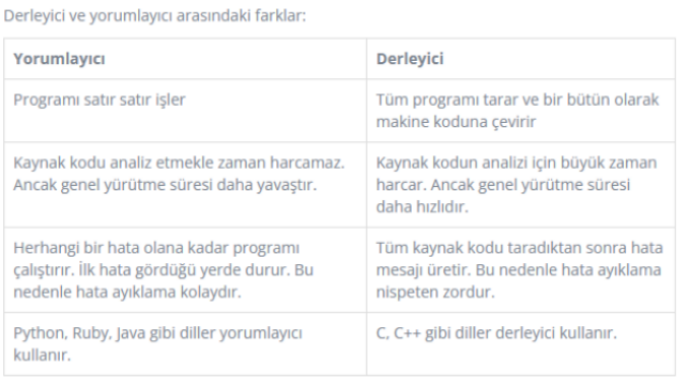

Derleyici (Compiler)
Derleyici (Compiler), girdi olarak yüksek seviyeli programlama diliyle yazılmış kaynak kodu alan, makinenin mimarisine göre makine dilinde çıktı üreten bir programdır. Çıktı olarak üretilen makine kodu sonradan herhangi bir zamanda farklı girdilerle tekrar tekrar çalıştırılabilir.
Yorumlayıcı (Interpreter)
Yorumlayıcı (Interpreter), girdi olarak program için olan verilerle birlikte kaynak kodu alan, ve kaynak programı satır satır yürüten bir programdır.
